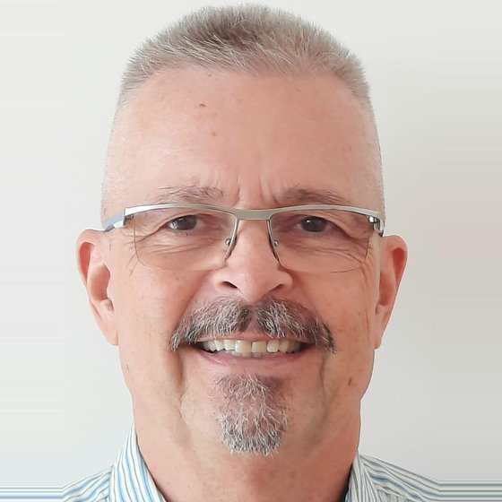
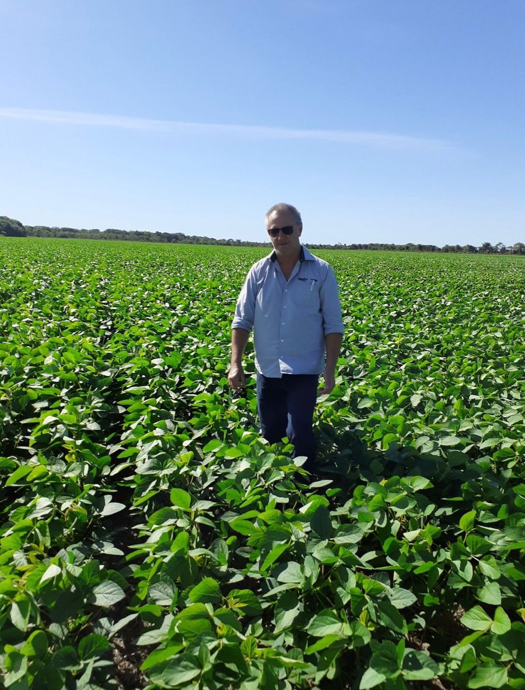

About
Who I am

Georg Reese
40+ years in agricultural management — Africa, Germany, and Brazil. Fluent in English and Portuguese. Your direct contact.
My name is Georg Reese. I have spent my professional career in agricultural management — in several African countries, in some of the largest agricultural businesses in Germany, and in Brazil.
I have known Brazil since 1984, when I spent a year as an intern on a cattle-and-rice farm in the state of Rio de Janeiro. As a consultant, I have advised clients on investments in Roraíma, on coffee production in Bahia and Minas Gerais, on selecting the best location in Brazil for a soybean farm — which is how I found Tocantins — and on cattle exports from São Paulo. For twelve years I owned a farm of my own, which I eventually sold to its manager. Today I am the director of a German-owned Brazilian company invested in forest land.
I know the country, its people, and its business culture, and I speak fluent English and Portuguese. I am retired — but I still value helping people and companies achieve their goals.
How this site came about
I visited Tocantins in 2018, scouting for a farm on behalf of a client. On that trip I spent a week with Mr. Rubin Weiss, an agronomist, university lecturer, and agricultural consultant who speaks some German. Late last year, Mr. Weiss contacted me again: he now works with Prime Fazendas, a farm brokerage, and asked me to help find European clients for their Tocantins portfolio.
Prime Fazendas is owned by Mr. Amorin, who comes from the real estate and agricultural sector and has an excellent network — including connections to the government of Tocantins, of which his father was formerly governor. The firm specifically acquires farms with potential and good value for money.

Getting started in Brazil
Prime Fazendas assists buyers well beyond the purchase: arranging financing for capital goods and working capital, obtaining permits, finding local workers and experienced managers (most managers come from Brazil's highly developed south), and — on request — arranging partners or tenants. In short, they ensure a successful start in Brazil.
Contact me
If you are considering a farm in Brazil and want to talk it through with someone who knows the country first-hand:
WhatsApp: +49 171 30 55 805
E-mail: georgreese@gmx.net
A personal viewpoint
In the more than 40 years that I have lived in, worked in, and visited Brazil, I have met many people in Europe who associate the country mainly with football and carnival — and otherwise consider it backward, and full of crooks. When they finally visited, they were surprised to find four-lane highways, skyscrapers, decent and hardworking people, and immense, ultra-efficient agriculture.
It is true that Brazil is a divided country — much of the north and northeast remain poor. And it is true that bureaucratic problems exist, especially in land documentation. The country is immense and, especially in the north, historically empty; in the past, the capital was far away and many people simply took what they needed.
All of that has changed over the last 40 years, with the return to democracy and with satellite technology that for the first time makes it possible to monitor vast stretches of forest and savannah. A backlog of unregulated land remains, but the government is committed to regularising it in an orderly way, with environmental and social protections. This is why acquiring land requires patience and legal assistance — and why, at the end of the process, the buyer holds an indisputable title, with every right the constitution guarantees.